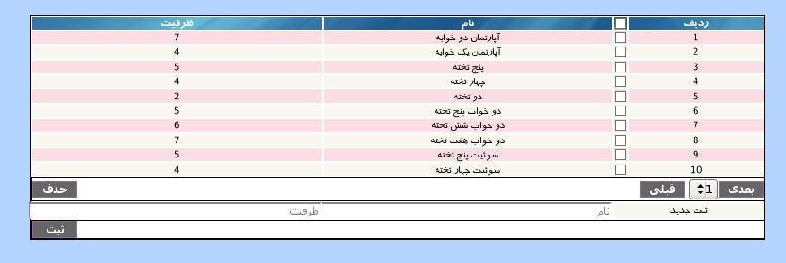
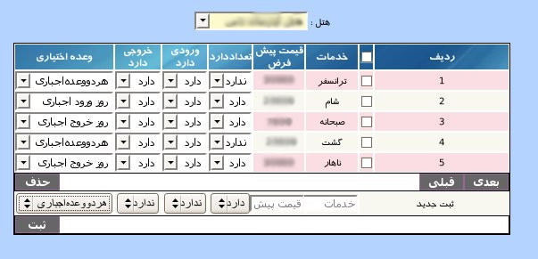

۱-مدیریت هتل
پنل مدیریت هتل یکی از قسمت های اساسی نرم افزار می باشد و شامل کلیه عملیات ثبت هتل جدید, رزرو, جابجایی, کنسلی و ... می باشد.
برای ثبت هتل جدید از قسمت پایین پنل مدیریت هتل می توانید نام هتل جدید و نوع مالکیت هتل که اختصاصی یا دیگران می باشد وارد نمایید سپس بر روی دکمه ثبت کلیک کنید. پس از ثبت هتل می توانید از ستون اطلاعات هتل, آدرس و شماره تلفن مورد نظر را وارد نمایید.
لازم به ذکر است که حساب معین و حساب معین هزینه غذا به طور اتوماتیک تولید می گردد و در صورت نیاز می توانید آن را از ستون حساب معین با کلیک بر روی لینک نمایش داده شده و ورود به صفحه انتخاب حساب تولید شده را به حساب مورد نظر برای دفتر تغییر دهید.
صفحه ی انتخاب حساب شامل دو لیست از حساب های کل تعریف شده و معین های این حساب ها می باشد.
برای انتخاب, ابتدا حساب کل سپس حساب معین مورد نظر را انتخاب و بر روی دکمه انتخاب کلیک نمایید.

برای تعیین زمان های فعالیت هتل می توانید بر روی لینک ادامه در ستون زمان های فعالیت کلیک کرده و پنل مربوط نمایش داده می شود.

ابتدا نام هتل مورد نظر را از منوی کشویی بالای پنل انتخاب کنید و سپس در قسمت پایین پنل, بازه تاریخی موردنظر را وارد نمایید, نوع بازه ی زمانی پیک/غیرپیک و هزینه هتل در این بازه را وارد نمایید و در انتها بر روی دکمه ثبت کلیک نمایید.
جهت ویرایش مقادیر هر آیتم در این پنل بر روی آن کلیک نمایید و پس از تصحیح کلید Enter را بزنید.
انواع اتاق برای همه هتل ها به طور پیش فرض تعریف شده است. در صورتی که نیاز به تعریف نوع اتاق جدید بوجود آمد می توان با کلیک بر روی آیکن تعریف نوع اتاق در پایین پنل وارد صفحه تعریف نوع اتاق شد و نوع مورد نظر را وارد یا انواع قبلی را ویرایش کرد همچنین امکان حذف نیز وجود دارد.

جهت ثبت اطلاعات اتاق های هتل می توان با کلیک بر روی لینک اتاق در ستون مدیریت اطلاعات اتاق وارد پنل مربوط شد.
برای ثبت اتاق جدید ابتدا نام هتل را از منوی کشویی بالای پنل انتخاب کنید سپس در قسمت پایین پنل ابتدا نوع اتاق, نام اتاق, توضیحات و شماره طبقه اتاق را وارد نمایید و در انتها بر روی دکمه ثبت کلیک نمایید. پس از ثبت با کلیک بر روی لینک ادامه در ستون آخر پنل می توانید تصویری برای اتاق مورد نظر انتخاب نمایید.
برای افزودن تصویر جدید بر روی دکمه Browse کلیک کرده و تصویر مورد نظر را انتخاب نمایید سپس بر روی دکمه ارسال کلیک نمایید.
برای تعریف خدمات هتل می توان با کلیک بر روی لینک خدمات در ستون مدیریت اطلاعات اتاق وارد پنل مربوط شد.

برای ثبت خدمات جدید ابتدا نام هتل را از منوی کشویی بالای پنل انتخاب کنید سپس در قسمت پایین پنل نام خدمات,قیمت پیش فرض را وارد نمایید.از لیست کشویی ستون بعد نوع خدمات که تعداد دارد/ندارد,ورودی دارد/ندارد, خروجی دارد/ندارد, وعده اجباری است یا اختیاری را انتخاب کرده و در انتها بر روی دکمه ثبت کلیک نمایید.
جهت ویرایش مقادیر هر آیتم در این پنل بر روی آن کلیک نمایید و پس از تصحیح کلید Enter را بزنید.
جهت رزرو اتاق می توانید بر روی لینک رزرو در ستون رزرو هتل کلیک نمایید و وارد پنل مورد نظر رزرو شوید.
جهت جستجوی اتاق در بازه ی خاصی برای رزرو ابتدا نام هتل مورد نظر سپس تاریخ مورد نظر و مدت اقامت را انتخاب نموده و بر روی دکمه جستجو کلیک نمایید. در صورت موجود بودن اتاق در هتل, پنل رزرو نمایش داده می شود.
پنل رزرو شامل سه قسمت اساسی می شود. در قسمت اول اتاق ها بر اساس نوع شان دسته بندی شده و با کلیک بر روی کلمه مشاهده لیست اتاق های نوع مورد نظر نمایش داده شده و می توانید اتاق مورد نظر را انتخاب نمایید. با کلیک بر روی دکمه انتخاب همه اتاق ها, تمام اتاق های مجموعه هتل انتخاب می شود. تعداد میهمانان را در کادر تعداد نفرات وارد نمایید. قسمت دوم پنل مربوط به نام دفتر و آژانس رزرو گیرنده می باشد. در صورتی که کمیسیونی بابت این رزرو پرداخت می شود نام دفتر و آژانس مورد نظر برای کمیسیون را نیز از کادر دوم انتخاب نمایید.قسمت سوم مربوط به خدمات انتخابی برای میهمان می باشد. اگر گزینه خدمات به صورت فول برد زده شود کل خدمات انتخاب می شود.
برای محاسبه قیمت اتوماتیک رزرو مورد نظر بر روی دکمه محاسبه قیمت کلیک نمایید تا قیمت مورد نظر در کادر نمایش داده شود. البته این قیمت قابلیت تغییر را نیز دارد. پس از اطمینان از رزرو بر روی دکمه رزرو کلیک نمایید.
در این صفحه خلاصه اطلاعات رزرو نمایش داده می شود و باید نام سرگروه میهمانان و شماره تلفن سرگروه و توضیحات اضافی مربوط به رزرو را وارد نمایید. پس از تایید اطلاعات بر روی دکمه ثبت نهایی کلیک نمایید.
پس از ثبت نهایی رزرو, رسیدی شامل اطلاعات کامل رزرو به همراه شماره پیگیری نمایش داده می شود و در صورت نیاز می توان با کلیک بر روی دکمه چاپ رسید را چاپ نمایید.
برای مشاهده وضعیت رزرو هتل می توانید با کلیک بر روی لینک وضعیت در ستون رزرو هتل وارد پنل مربوط شوید.
در این پنل سطرها نمایانگر اتاق و ستون ها نمایانگر روزهای ماه می باشد. رنگ سبز نشانگر خالی بودن اتاق و رنگ های دیگر نشانگر اشغال بودن است. هر رنگ نماد یک دفتر می باشد.راهنمای رنگ دفاتر در پایین پنل نمایش داده می شود. با کلیک بر روی شماره اتاق می توان تصاویر اتاق را مشاهده نمود. با کلیک بر روی محدوده های رنگی به جز سبز می توان وضعیت اتاق از نظر رزرو و اطلاعات پذیرش مشاهده نمود.
با کلیک بر روی دکمه ی بزرگنمایی سایز جدول بزرگتر, با کلیک بر روی کوچک نمایی سایز جدول کوچکتر و با انتخاب حالت پیش فرض, سایز جدول به اندازه پیش فرض تغییر می کند.
برای کنسل کردن یک رزرو بر روی لینک کنسلی در ستون کنسلی کلیک نمایید.
در این پنل می توانید شماره رزرو یا نام و نام خانوادگی و یا بازه ی مورد نظر برای کنسلی را انتخاب و جستجو نمایید. پس از کلیک بر روی دکمه جستجو لیست رزرو ها نمایش داده می شود. ابتدا رزرو مورد نظر را انتخاب سپس بر روی دکمه ثبت کنسلی کلیک نمایید. برای کنسل کردن رزرو می توانید توضیحاتی وارد نمایید.
برای اصلاح یک رزرو خاص بر روی لینک اصلاحیه در ستون اصلاحیه کلیک نمایید.شماره رزرو مورد نظر را وارد و بر روی جستجو کلیک نمایید.
پس از انجام تغییرات مورد نظر بر روی دکمه ثبت کلیک نمایید. بعد از ثبت تغییرات می توان با کلیک بر رو ی دکمه مشاهده اصلاحات تمامی اصلاحات انجام شده برای این رزرو نمایش داده می شود.
جهت مشاهده گزارش خدمات بر روی لینک گزارش خدمات در ستون گزارش خدمات کلیک نمایید.
برای انجام جستجو ابتدا نوع خدمات سپس تاریخ مورد نظر را انتخاب نمایید و بر روی جستجو کلیک نمایید. لیست کاملی از جزئیات رزروهایی که از خدمت مورد جستجو استفاده می کند نمایش داده می شود.
جهت مشاهده ورودی ها یا خروجی ها و یا جستحوی یک میهمان بر اساس نام یا شماره رزرو از منوی جستجوی پیشرفته استفاده نمایید .
برای مشاهده ورودی های یک روز کافی است تنها تاریخ ورود را مقدار دهید و دکمه جستجو را کلیک کنید.
برای مشاهده خروجیهای یک روز کافی است تنها تاریخ خروج را مقدار دهید و دکمه جستجو را کلیک کنید.
و در غیر اینصورت بر طبق نیاز آیتم های مورد نظر را انتخاب و جستجو نمایید.
یکی از بهترین امکانات سیستم امکان جابجایی میهمان پس از رزرو در هنگام حضور میهمان در هتل است. جهت انجام جابجایی برروی کلمه جابجایی کلیک کنید توجه داشته باشید جابجایی در حالی انجام خواهد گرفت که مهمان در هتل حاضر باشد.
ابتدا برروی رزرو مورد نظر برای جابجایی کلیک کنید سپس برروی رزرو دیگر ویا برروی جای خالی کلیک فرمایید.
پس از آن برروی جابجایی کلیک کنید تا جابجایی انجام پذیرد.
منوی بعدی منوی حساب معین هزینه غذا می باشد که برای بحث کاست کنترل بطور خود کار ساخته می گردد و جهت تغییر آن با کلیک برروی آن می توان ان را تغییر داد.
منوی بعدی غذا جهت خارج کردن غذای پرسنل از انبار می باشد و این قسمت نیز برای بحث کاست کنترل ساخته شده است که با کلیک برروی آن می توان هزینه غذای پرسنل را محاسبه نمود.
جهت حذف تکی هر آیتم, موس خود را بر روی شماره ردیف آیتم برده و بر روی لینک حذف کلیک نمایید.
جهت حذف گروهی آیتم ها, آیتم های مورد نظر را انتخاب و بر روی دکمه حذف کلیک نمایید.